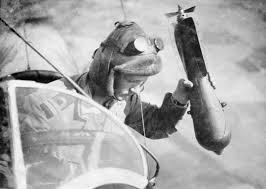
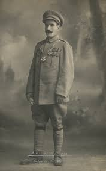

O que foi a primeira grande guerra?
Iniciou-se dia 28 de julho de 1914 até o dia 11 de novembro de 1918.
A Primeira Guerra Mundial (ou “A Grande Guerra” até iniciar-se a segunda), foi um conflito armado entre os países mais poderosos da Europa no século XX, um evento que ficou registrado na história e influenciou diversos outros eventos, como o surgimento da União Soviética e até mesmo a Segunda Guerra Mundial.
Mapa da Europa
Esse mapa indica para qual "time" os países estavam apoiando, acompanhe a legenda.
obs: a maioria dos paises neutros se uniram a Triplice Entende.
Motivos
Por que um conflito tão humanamente regressivo?
- Alemanha e Itália ficaram com poucas terras e ruins na Neocolonização;
- Concorrência comercial e uma corrida bélica (corrida armamentista) bem estressante;
- A França ter perdido a região da Alsácia-Lorena para a Alemanha após a Guerra Franco Prussiana;
- O interesse em comum entre o povo Germânico e o povo Eslavo em unir todas os países de origem germânica;
- Por último e estopim (o que deu o gatilho para se iniciar a guerra), o assassinato do príncipe austro-húngaro por conta de um homem de nacionalidade Sérvia.
Principais Envolvidos.
Na imagem abaixo pode-se ver os "donos" das alianças.
Triplice Entende.
- África do Sul
- Bélgica
- Brasil
- Cuba
- Estados Unidos
- França
- Grécia
- Império Britânico
- Itália
- Japão
- Portugal
- Reino da Romênia
- Reino da Sérvia
- Rússia
Triplice Aliança
- Áustria-Hungra
- Bulgária
- Império-Alemão
- Império Turco-Otomano
- Luxemburgo
- República Weimar
Principais Eventos
Alguns eventos que marcaram a primeira guerra mundial

- O vasto uso de aviões para bombardeamento.
- Uso de bombas químicas contra a infantaria.
- Navios dos Estados Unidos e do Brasil são torpedeados.
- Brasil e Estados Unidos entram na guerra pela Tríplice Entente.
- Russia sai da guerra por problemas internos.
Maiores Ícones
Pessoas que ficaram marcadas nesse evento.
Francisco Ferdinando
Príncipe Austro-Húngaro (seu assassinato foi o estopim para a guerra);
Nicolau II

Czar Russo (O último Czar russo, foi assassinado na Revolução Russa);
Lenin
Primeiro-Ministro da URSS (Assumiu o poder da União Soviética após a Revolução Russa, fazendo com que o país saísse da guerra);
Venceslau Brás
Presidente Brasileiro (Após os navios brasileiros serem torpedeados, aderiu ao confronto com o enviou de médicos para as tropas).
Melhores soldados
Aqui temos um espaço reservado para os soldados fora de série
Aviadores
Soldados da aeronáutica mais famosos da primeira guerra mundial
Manfred von Richthofen
80 Vitórias de combate aéreo.
René Fonck
75 vitórias de combate aéreo.
Billy Bishop
72 vitórias de combate aéreo.
Infantaria.
Francis Pegahmagabow 378 abates.

Aníbal Augusto Milhais
Não se tem dados, contudo
teve a maior honraria
concedida de Portugal, sendo
chamado de Soldado Milhões.

Lawrence Dominic McCarthy
Não se tem dados, contudo
teve a maior honraria concedida
pela Inglaterra.
Armas
Segue aqui as imagens das principais armas da primeira guerra
Lança-chamas
Metralhadoras
Gases venenosos
Encouraçados
Tanque de guerra
Aviões
Submarinos
Dados de feridos e mortos
Aqui temos a contabilidade das perdas e sequelas das nações
França: 1,4 milhão de mortos e 4,2 milhões de feridos;
Alemanha: 2 milhões de mortos e 4,2 milhões de feridos;
Áustria-Hungra: 1,4 milhões de mortos e 3,6 milhões de feridos;
Rússia: 2 milhões de mortos e 5 milhões de feridos;
Reino Unido e seu império: 960.000 mortos e 2 milhões de feridos;
Itália: 600.000 mortos e um milhão de feridos;
Império Otomano: 800.000 mortos.